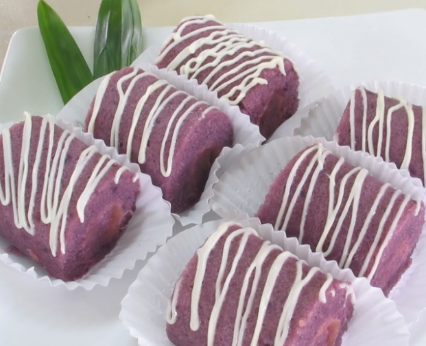

Resep kue basah basah ubi ungu

Bahan-Bahan:
- Ubi ungu 450 gram
- Gula pasir 200 gram
- Mentega 150 gram
- Telur ayam 6 butir
- Essens vanila ½ sendok teh
- Coklat putih untuk olesan
Langkah-Langkah:
- Langkah 1 :
- Ubi ungu dikupas dan dicuci sampai bersih lalu dikukus dan diangkat jika sudah lunak
- Langkah 2 :
- Haluskan ubi ungu selagi masih panas.
Lelehkan 150 gram mentega.
- Langkah 3 :
- Lelehkan coklat putih sebagai olesan cake.
- Langkah 4 :
- Siapkan cup alumunium berbentuk silinder/tabung.
Panaskan oven hingga mencapai suhu 180 C
- Langkah 5 :
- Campurkan gula dan telur, kocok dengan mixer hingga setengah mengembang lalu tambahkan essens vanila, kemudian kocok adonan kembali hingga mengembang.
- Langkah 6 :
- Masukkan ubi ungu, aduk terus sampai merata.
- Langkah 7 :
- Tambahkan mentega yang sudah dilelehkan tadi lalu aduk hingga rata
- Langkah 8 :
- Tuang ke dalam cup hingga hampir penuh lalu panggang dalam oven selama kurang lebih 35 menit sampai permukaan cake terlihat berwarna kecokelatan.
- Langkah 9 :
- Keluarkan cake dari oven dan oleskan dengan coklat putih yang sudah dilelehkan.